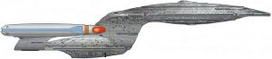
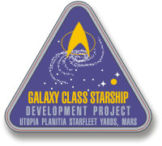

Flotta Stellare - Classe Galaxy |
|
||
|  | ||
|  |
Dati di una nave tipica di questa classe:
Cantieri di produzione: ADSB Integration Facility,
Utopia Planitia,
Marte.
Categoria: Nave esplorativa.
Capacità: 1.012 membri di equipaggio, 200 visitatori, 15.000 persone come
limite massimo in caso di evacuazione di emergenza.
Motori: Nucleo a curvatura con due gondole, un sistema ad impulso nella
sezione tecnica, due sistemi ad impulso nella sezione a disco.
Dimensioni: 642,51 metri di lunghezza, 463,73 metri di larghezza, 195,26
metri di altezza.
Dislocamento: 4.500.000 tonnellate.
Velocità massima: Warp 9,6 per 12 ore.
Armi: Dodici emettitori phaser
tipo X, tre lanciasiluri.
La classe Galaxy contempla la presenza delle famiglie dell'equipaggio a
bordo della nave.
I piani preliminari della classe Galaxy prevedevano un vascello di
6.000.000 di tonnellate di massa, poi ridotti al fine di ottenere prestazioni
velocistiche superiori.
Le navi di classe Galaxy messe in servizio durante la guerra contro il
Dominio possedevano un
armamento migliorato rispetto a quelle della prima serie e hanno una massa
inferiore a quella nominale, in quanto non venivano equipaggiate con
apparecchiature scientifiche non indispensabili alle normali operazioni
militari.
| USS Challenger NCC-71099 Comandata dal Capitano Geordi La Forge in una timeline alternativa. | Timeless | Challenger è il nome dello Space Shuttle esploso in un tragico incidente appena dopo il decollo al cui equipaggio è stato dedicato anche Star Trek IV. |
| USS Enterprise NCC-1701-D Ha lasciato i cantieri navali nel 2360 ed è stata varata il 4 ottobre 2363 dopo svariati test e l'installazione del modulo finale della plancia. Comandata da: Capitano Jean-Luc Picard, Capitano William Riker (promozione sul campo), Capitano Edward Jellico, Capitano Jean-Luc Picard. Scafo primario distrutto da un cedimento del nucleo del motore warp; la sezione a disco è stata distrutta durante un atterraggio di emergenza su Veridiano III. | The Next Generation, Generations | Tutte queste navi si chiamavano Enterprise... |
| USS Galaxy NCC-70637 Ha combattuto con altre quattro astronavi di questa classe nella battaglia preso il sistema Chin'toka nel 2374. Alla fine dello scontro la Galaxy è stata seriamente danneggiata dalle forze del Dominio. | Tears of the Prophets | |
| USS Odissey NCC-71832 Comandata dal capitano Keogh, distrutta da un vascello Jem'Hadar nel quadrante Gamma. | The Jem'Hadar | Odissey è il nome del modulo di comando dell'Apollo 13. La targa commemorativa della Odissey riporta una frase da 2001 A Space Odissey: «Its origin and purpose, still a total mistery». |
| USS Venture NCC-71854 Nave che ha comandato le astronavi che hanno aiutato Deep Space Nine a gestire l'attacco Klingon di Cardassia. Ha partecipato alla missione di riconquista di Deep Space Nine. Ha partecipato nel 2374 durante alla battaglia tra la Federazione e il Dominio per il controllo del sistema Chin'toka. | The Way of the Warrior, Sacrifice of Angels, Tears of the Prophets | |
| USS Yamato NCC-71807 Nave gemella dell'Enterprise comandata dal Capitano Donald Varley, distrutta nel 2365 da un virus informatico trasmesso da una sonda iconiana che ha danneggiato irreparabilmente tutti i computer di bordo facendo collassare il campo di contenimento dell'antimateria. | Contagion | Gli Yamato sono stati il clan più importante del Giappone medioevale. La Yamato era una corazzata giapponese che ha combattuto nella Seconda Guerra Mondiale. Le due navi gemelle Yamato e Musashi furono le due più potenti corazzate di tutto il conflitto. La targa commemorativa della nave riporta la frase di Thomas Jefferson: «I have sworn eternal hostility against every form of tyranny over the mind of man». |